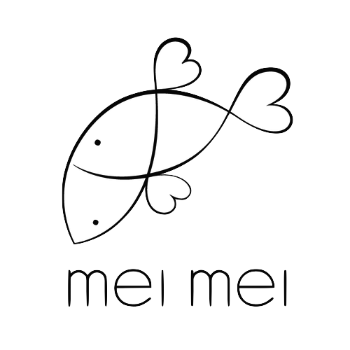

Pop UP! Do Good
Benefit for Syrian Refugee Relief
Please join us for a family style dinner featuring the flavors of Syria.
Monday, February 22nd at Mei Mei Restaurant
All proceeds benefit the American Refugee Committee: Syria Project.
Tickets are $70. Reservations available through the Reserve App, see instructions below for tickets!
Crisis in Syria
Crisis in Syria
As chefs and cooks, we have the tremendous privilege of cooking for our community in a restaurant setting. We have the blessing of quality ingredients and an intrigued public who allow us to share our art with their support. Through this abundance, however, there is real crisis. War torn Syria has forced 11 million to leave their homeland in search of security. Hunger is prevalent and basic necessities are difficult to acquire. How can we help from so far away?
An easy answer to a complicated question: Break bread. Gather around the table. Share food inspired by the cuisine of Syria.
For one night, we will come together as family and open our hearts to those in need. All proceeds from ticket sales will go directly to the American Refugee Committee’s efforts to provide food, clothing, hygiene kits, education and emergency shelter for Syrian families fleeing violence.
All proceeds from the event will be donated to the American Refugee Committee’s effort to provide refuge and shelter for people displaced in the current crisis in Syria and Jordan.
By The Numbers
- 11 million Syrians have fled their homes
- 4 million are living in the neighboring countries of Turkey, Lebanon, and Jordan
- 7.6 million are still inside Syria
- 2.6 million Syrian children are out of school
ARC has worked in Syria and Jordan since 2013. If you are unable to join us for the evening, please consider donating directly!
Tickets
Pop up reservations/tickets are now ready! Tickets to the dinner are $70. We have partnered with the Reserve App, so to save your place:
- Download the Reserve app
- Book your spot at Mei Mei for February 22nd at 7pm
- Please make a note that you’re coming for the pop up by entering “refugee relief benefit” in the notes box.
Location
LOCATION

Mei Mei Kitchen
506 Park Drive, Boston, MA 02215 (slightly around the corner on Buswell Street)
Street parking is available on our side of Buswell Street and many of the surrounding blocks.
Metered parking is available on Beacon Street and St. Mary’s Street.
The restaurant is just a few blocks from BU Central (Green B Line), St. Mary’s (Green C Line) and Fenway (Green D Line).
About Us
The Chefs and Cooks
Mary Kastman and her cook pals from all around the city are executing this event. Mary moved to Boston in 2011 from the great state of Wisconsin (Go Pack, Go!) and jumped right into eastern Mediterranean cuisine at Cambridge Oleana restaurant. For three years she worked closely with Ana Sortun, Cassie Piuma and Cara Chigazola learning the nuances of spice and the middle eastern pantry. Currently, Mary continues to work with Piuma at Sarma enriching her knowledge of eastern Mediterranean food. Most days you can find her in the heart of the action at Sarma’s Mezze bar.
For more information, email Mary Kastman
Supporters
If you aren’t able to attend the dinner, please consider donating directly to the American Refugee Committee.
We would also like to thank the many generous supporters who are donating their time and resources so that we can maximize our gift to the ARC:

{kind=link}